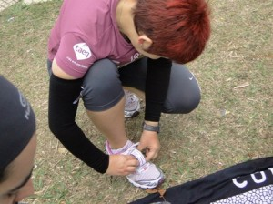
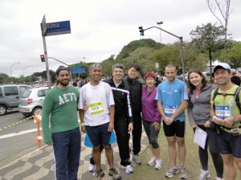
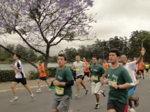
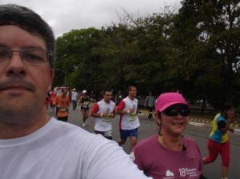
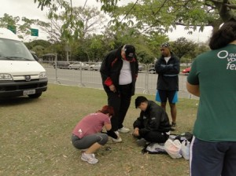
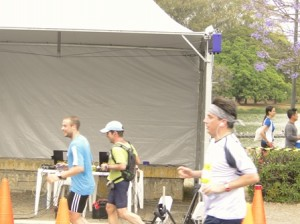
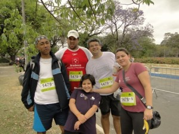
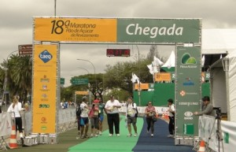
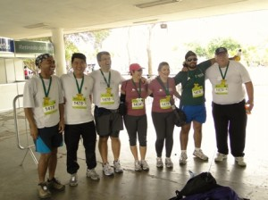

vamo, vamo, vamo…
18ª Maratona de Revezamento Pão de Açúcar S.Paulo
Cá estou para relatar minha estréia na corrida de revezamento.
A semana passada custou a terminar e a ansiedade veio com ela.
Na sexta-feira, antevéspera da corrida saiu uma matéria de Rodolfo Lucena comentando e dando dicas para a tão esperada corrida de Revezamento. De cara dizia que estavam inscritos 32 mil corredores……uauuuuuuuu…….. é uma das maiores corridas de revezamento, sendo a 8a. no rank mundial e, que 23% eram iniciantes, ou seja, eu e mais alguns de meu grupo estávamos nesse percentual de estreantes. Também deu dicas do que comer, fazer e não fazer.
Dizia o artigo que a corrida é “muvucada”. Tentei imaginar o que seriam esses 32 mil corredores na pista, digam-se, alguns corredores de nome e peso, tive a sensação de ser um grão de arroz no meio desse universo. Tratei de procurar no site do evento o resultado da equipe vencedora do ano passado, bem como a última colocada para ter idéia de tempo.
O Claudio ficou de retirar o kit, mas estava enrolado e não poderia ir buscá-lo antes de sábado. Eu estava ansiosa, o kit representava a materialidade da corrida, então me ofereci na sexta-feira para ir buscá-lo.
O kit era simples, o diferencial foram as camisetas verde escuro para o masculino e rose para o feminino. A novidade, aliás, para mim já não era mais novidade (esqueci de comentar no post anterior), foi o chip descartável, que deve ser colocado no pé direito. Dá uma falsa sensação de que vai cair, porque fica um círculo em cima do tênis, mas como deve ser amarrado, era só checar se estava seguro.

Seguindo a recomendação de Rodolfo Lucena, sexta dormi não muito tarde.
Sábado acordei somente quando meu corpo e mente quiseram despertar…… foi uma noite de muitos sonhos, aliás, sempre tenho vários sonhos, mas só consigo me lembrar dos 2 últimos. Acordei já eram 10hs45 min. Aos sábados acordar nesse horário sem ter despertado umas duas vezes pela madrugada achei estranho, mas Rodolfo disse descansar e dormir bastante, acho que meu subconsciente assimilou a informação.
Finalmente o dia da corrida de revezamento chegou! Saímos com tempo o suficiente para não ficar parado e estressado no transito.
Thiago praticamente chegou conosco no ponto de encontro. Corajoso só vestia camiseta apesar de estar gripado e a temperatura estar em 11ºC. Enquanto aguardávamos os outros membros da equipe, esbarrou por nós a mãe de uma coleguinha do colégio da Syssi, surpresas da vida. Trocamos algumas frases e ela seguiu para encontrar sua equipe, o tempo urgia.
Minutos depois chegaria também Paulo Motta colega da equipe de revezamento do Thiago. Conversamos um pouco sobre …….. corrida é claro…. Logo depois chegaria Claudio, Fabio, Samuel e Luciano. Tratamos de etiquetar e chipar o Samuel, o 1º a correr. Mais uma vez olhamos o mapa do circuito para localização das trocas impar e par. O ponto de troca impar estava próximo ao nosso ponto de encontro, mas a troca par…… no outro extremo do circuito.

Ouvimos dar a largada e quase perdemos a passagem do Samuca por nós, mas deu tempo de fotografá-lo. Logo depois o Fabio seguiria para o local da troca par.

Chegada a hora de ir, eu e Luciano deixamos no ponto de encontro Melinha, Igor, maridão Silvio e Syssi, então eu pude ter idéia de parte da dimensão de pessoas circulando aos arredores do circuito. Obrigatoriamente precisamos passar por dentro do Parque Ibirapuera que naquela manhã estava tão solitário e vazio, diferente de outros tantos domingos que lá estivemos para passear ou andar de bicicleta.
Quando cheguei ao local da troca par (na Av. Rubem Berta) vi um mundaréu de gente….. Bateu um stress, um nervoso, quantas pessoas amontoadas, outras descansando no barranco aguardando sua vez. Será que eu conseguiria ver o Claudio passar? Ou será que ele já tinha passado?? O temor era mais forte quando eu via alguns corredores passando de um lado para outro com a munhequeira na mão sem localizar o parceiro de troca.
Comecei a ficar angustiada, via os corredores passando do outro lado da rua, espiava a minha direita para ver os que estavam retornando……. e nada…….. sensação horrível a de ter perdido o parceiro de troca, que poderia acarretar atraso para a equipe. Eis que numa das olhadas vejo o Claudio chegando, me apressei para ficar bem a vista, a troca foi hiper rápida, ele caminhando forte passou a munhequeira, eu fui colocando no pulso e correndo sem perder 1 minuto, porque conheço minhas limitações. Logo atrás vinha o Claudio que correria conosco para assim fazer seu treininho.
Confesso que fiquei inibida, não tenho pernas para acompanhá-lo. Fomos seguindo, ele pegou a máquina fotográfica que eu carregava na mão para registrar a corrida, foi fotografando durante o percurso, agora não se tratava de seu tempo. Claudio fez uma restrição, não falar para não gastar energia, bom só comunicava que ia caminhar……. no mais “bico calado”………..rs

Eu seguia trotando, caminhando, peguei uma descida, depois encarei 2 subidas e perguntei ao Claudio quanto faltava, ele respondeu 2 km, bem mais a frente fiz a mesma pergunta e a resposta foi a mesma, oras……. indaguei, vc acabou de dizer 2 e não saímos disso?? Peguei uma descida novamente, quando avistei o tapete verde que pareceu não ter fim. Pensei, cadê o portão 8????????????
Caramba, passavam todos os números que antecediam e nada de aparecer o 8, foi quando avistei o Claudio com um sorriso enorme apontando para Melinha, senti um alívio, a troca também foi rápida.
Melinha seguiu com Cláudio e eu logo depois estaria no ponto de encontro onde estaria Samuel e Fábio que já tinham concluido seu percurso. Igor ali meio que sozinho, fazia o aquecimento concentrado, logo quis ir para o local da troca, eu o desestimulei, porque Melinha ainda iria passar para o Luciano, então seria um percurso de 10 km, ele ficaria tempo demais esperando num verdadeiro tédio.
Como é difícil administrar o tempo para não ficar esperando demais nos pontos de troca, mas acho que conseguimos neste quesito, tudo foi instinto.
Lembrem-se o Capitão de nossa equipe – Claudio “Pace” estava no circuito, então o consenso dos que já tinham feito o percurso administramos os outros que ainda iriam correr.
Sr. Pedro chegou e passou pelo mesmo ritual, colocar o número no peito, o chip no tênis direito. Como ainda estava cedo para ele ir ao ponto de troca, ficamos conversando, observando a performance dos corredores que passavam a nossa frente, apontando as equipes presentes, sem contar a descontração total do Samuel com suas piadas. Foi muito bom, o tempo passou que nem sentimos.

Dentre tantos corredores vimos o Thiago e Paulo passando por nós o que valeu o incentivo de força e estimulo estilo tiete mesmo!

Esse mundo realmente é pequeno …….. encontrei a mãe de outro amiguinho do colégio da Sy, para minha surpresa não sabia que também participava da corrida. Não deixei de incentivá-la – Força Cristina!!!, gritei. Acho que assustei um pouco, pela reação ela não esperava alguém naquela hora, naquele lugar gritando seu nome, quando me viu lançou um sorriso e foi na sua batida.
A manhã começava a esquentar com um leve sol despontando dentre as nuvens escuras e eu ali com alguns integrantes da equipe que eu não conhecia, nunca trocamos comentários em blog, conversando como se fosse amigos de longas datas. Ainda bem que sempre tinha alguém para conversar e fazer companhia para o Silvio, porque ficar ali esperando horas por nós, não deve ter sido agradável.

Aproximava o momento do último integrante da equipe revezar. Levantamos acampamento. Samuel levaria o Sr. Pedro para o local da troca e os demais seguiriam também para cruzarmos a linha de chegada. Luciano acabou indo embora e não participou da reta final da equipe, tinha compromissos.
Syssi ficou empolgada e taxativamente disse que correria ao meu lado na reta final. O Papy ficaria sozinho para registrar o momento da chegada. E assim foi. A equipe unida cruzou a chegada sob os olhares e saudação do Alecão na tribuna Vip, nosso garoto Taeq e as lentes do Silvio.

Sr. Pedro demonstrava uma satisfação impar nessa empreitada, era contagiante, alegria maior foi cruzar a chegada unidos.
Tudo foi perfeito, lamentei apenas não ter cronometrado meu tempo na corrida, diante de minha ignorância que algumas vezes persiste em ativar/acionar o cronometro, acabei fazendo o percurso sem saber meu tempo. Agora fico aguardando a divulgação do resultado que deverá ocorrer somente na quinta feira.
Uma certeza ficou, esforçamos bastante para fazer nosso melhor tempo, houve um grande entrosamento e espírito de equipe dos integrantes que até então eram desconhecidos entre si.

Comentou nosso amigo Fabio Namiuti que deixei de ser principiante, mas jamais imaginei estar participando de uma corrida de revezamento. Agora sei por que cada vez tem mais inscritos……
Agradeço pela oportunidade de compor a equipe que já está pensando numa próxima…….
Enfim, valeu a pena ter madrugado no domingo.
Carpe Diem!!!!!!!!!!!!!!!
link para fotos:
http://picasaweb.google.com.br/110316945136018300007/18aCorridaDeRevezamento?feat=directlink
.jpg "DSC01715 (576x1024)")
.jpg "DSC01828 (1024x576)")
.jpg "DSC01850 (1024x576)")
.jpg "DSCN5696 (1024x768)")


Muito bom o relato, deu vontade de fazer outra no proximo final de semana, a fotos também estão ótimas.
Parabéns
As fotografias que podem ser vistas pelo link do picasa FICARAM DEMAIS.
O Relato ficou maravilhoso e muito bom ver como para cada membro da equipe sempre tem algo único no desenrolar de todo o evento. Isto me motivou a fazer a minha versão dos fatos também.
Parabéns pela superação, espiríto de equipe e pelo belo relato, Ana.
Este evento foi muito bom e nossa equipe, MUITO ESPECIAL!!!
Ana, adorei seu relato detalhado, sinto até vergonha se ser simplistas em meus relatos. 🙂
Acho que a ansiedade é o que impera nas provas deste tipo. Na minha equipe, da segunda para terceira troca teve encrenca. O terceiro teve que ir no banheiro e a segunda teve que esperar 12 minutos no ponto de troca (imagina a neura).
Adorei todas as fotos que estão no Picasa. Muito legal.
Parabéns pela força de vontade, parabéns para a Equipe e viva o “Ex-sedentário” e os ex-sedentários (a questão de singular e plural ainda vai gerar um post, hehehehe).
Claudio, quero ver seu relato sim, acho que como organizador e incentivador, tem muito o que falar.
É vontade de repetir outro revezamento é o que não falta.
brigaduuuuuuuuuuuuuuuu
Estamos aguardando o cumprimento de seu último castigo e que os comentários dessa prova sejam bem rosinha……
É sempre um aprendizado vivenciar e ler relatos de experiência de outros. Cada um tem um degrau a ser superado e essa prova era um teste de união e sintonia das equipes, como aquele grito de guerra Todos por Um.
Adorei a experiência e espero poder repetir em 2011.
As fotos foram selecionadas a dedo com marcação de tempo ….. finalmente consegui linkar como queria.
Alecão,
Melinha vive dizendo que blog tem de ser curto, mas eu não consigo.
Nessa prova o fator tempo de troca era muito importante, ainda bem que não tivemos atropelos, tudo correu bem.
Já demonstramos que em se tratando de festa……. “tamus ai”………rs.
Achei que exagerei nas fotos, mas queria fazer a justa homenagem a todos da equipe. Ainda bem que estão gostando das fotos…….
Abs
Claudio!!!!!
Belo relato, hein!!! Parabéns pela prova, voc~es deram um belo exemplo!
Só faltou a foto do pessoal alongando…. estou esperando!!!
Abração a todos!
Parabéns, Ana! A você e também a todo o pessoal da equipe nessa grande conquista coletiva. E também por esse belo relato, contando de forma bem bacana como foi a festa toda.
Apesar das minhas quase 150 corridas, nunca fiz uma de revezamento, acredita? Não sei se sou eu que não gosto (sem experimentar, que nem espinafre), se o pessoal que não me chama porque sou meio panga, se é porque não tem dessas coisas aqui no interiorrrrr. Um dia eu ainda corro uma dessas. Quem sabe a famosa Ayrton Senna Racing Day.
Obrigado pela citação. Nem caminhante e nem iniciante. Corredora o que és!
Abraço,
Fábio
http://www.fabionamiuti.hd1.com.br
Bom, essa corrida foi fantástica!!!
O povo descontraído, curtindo, e aquela ansiedade que deixa tudo mais gostoso.
Quando cheguei estava tão nervosa, ansiosa…rsrs…mas a prova foi bem tranquila. O Cláudio me acompanhou no percurso, e olha, não foi fácil não, só tinha subidinhas e as pernas me faltaram, mas mesmo assim não desisti, afinal não era só EU que estava correndo, e sim a EQUIPE!
O mais emocionante foi ver que apesar de cansados, todos foram de encontro ao Seu Pedro, para acompanhá-lo na reta final, e foi uma alegria só, as fotos estão aí para comprovar.
Tenho certeza que todos da equipe, assim como eu, estão esperando pela próxima!
(Mãe, ficou ótimo o Post, não precisa ser curto sempre :P)
Fábio
Minha participação nesta corrida foi movida a entusiasmo, tipo assim, precisavam de pessoas para compor 8 integrantes……..rs……….. quase verdade, como já estava participando de algumas corridas o Cláudio comentou sobre essa e eu jme habilitei e ofereci as pernas de Melinha e Igor.
É pauleira mesmo, tentar correr o mais que pode e não perder tempo na troca, vc precisa participar de uma, ou várias. Mas acho que lhe faltou oportunidade.
Ano que vem estaremos lá……….. quem sabe vc não venha correr conosco……..
Também tem a Airton Racing Day, mas Interlagos é dureza, pq o asfalto exige bastante, mas como vc já é do ramo, nem sentirá.
Obrigada pelo comentário.
Abs
Ana
Melinha
Não fazia idéia do que seria e como seria, superou a expectativa.
Vc conseguiu sintetizar tudo cada um na pista era a EQUIPE correndo e o melhor de tudo, conseguimos cruzar unidos a linha de chegada.
Que venham próximas corridas de revezamento e quem sabe não possamos correr com mais de uma equipe??………. Seria muito bom……
ok, prometo nem sempre me alongar no texto, mas as vezes é necessário………rs
bjks
Mamys